56
ഗണിതം 2
സ്റ്റാൻഡേർഡ്

56
ഗണിതം 2
സ്റ്റാൻഡേർഡ്


4
4
യൂണിറ്റ്
സമ്മാനപ്പൊൊതി
സമ്മാനപ്പൊൊതി
57

ഫിസിനും ഫിസയും മാമനെ കാത്തിരിക്കുകയാണ്.
അതാ മാമനെത്തി.
പൊൊതിയിൽ എന്തായിരിക്കും? 58
ഗണിതം 2
സ്റ്റാൻഡേർഡ്
സമ്മാന പ്പൊൊതി കൊൊണ്ടു വന്നല്ലോോ.
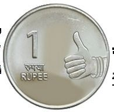
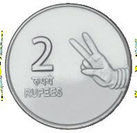
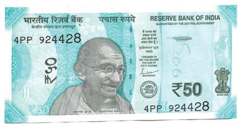
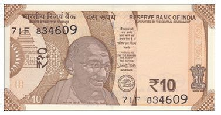
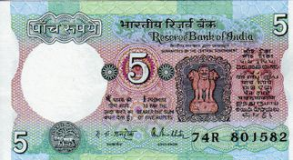
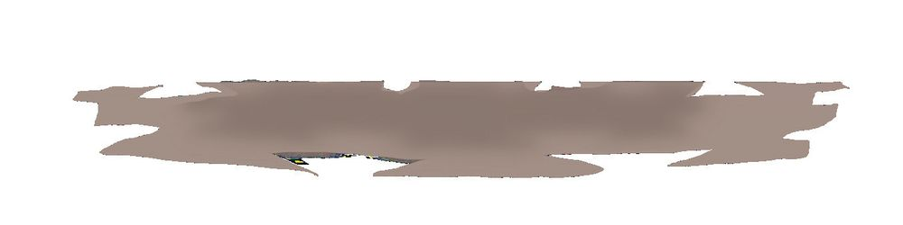

സമ്പാദ്യയപ്പെട്ടി ഹായ്... കുഞ്ഞു വീടുപോോലൊൊരു പെട്ടി!
പൈസയെല്ലാം ഇതിലിട്ടു വയ്ക്കാം.
രണ്ടുപേരുംം നാണയങ്ങളുംം നോോട്ടുകളുംം എണ്ണിവച്ചു.
എത്ര രൂപ?
ഫിസ
എത്ര രൂപ? 4
യൂണിറ്റ്
ഫിസിൻ
സമ്മാനപ്പൊൊതി
59

ഏതൊൊക്കെ നോോട്ടുകൾ? ഞങ്ങളുടെ കൈയിൽ 5, 10, 50 രൂപ നോോട്ടുകളുണ്ട്.
വേറെ ഏതൊൊക്കെ നോോട്ടുകൾ ഉണ്ട്?
ഏതൊൊക്കെ നോോട്ടുകൾ നിങ്ങൾ കണ്ടിട്ടുണ്ട്? എഴുതൂ.
60
ഗണിതം 2
സ്റ്റാൻഡേർഡ്
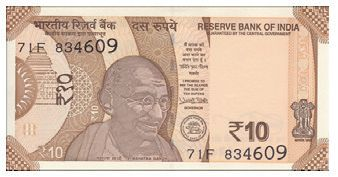

എത്ര രൂപ? ഓരോോ കൂട്ടത്തിലും എത്ര രൂപയെന്ന് കണക്കാക്കി വരച്ചുചേർക്കൂ. 100
20
50
40
4
യൂണിറ്റ്
30
സമ്മാനപ്പൊൊതി
61
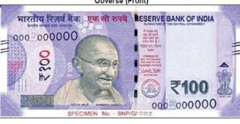
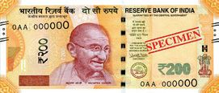
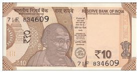

പണമെടുക്കാം. ഫിസയും ഫിസിനും മാമനൊൊപ്പം പട്ടണത്തിലേക്ക് പോോയി. ATM ൽ നിന്ന് പണമെടുത്തു. ATM ൽ നിന്ന് കിട്ടിയ നോോട്ടുകൾ.
എത്ര നൂറ് രൂപാ നോോട്ടുകൾ?
ചില്ലറയാക്കാം.
എത്ര ഇരുന്നൂറ് രൂപാ നോോട്ടുകൾ?
അവർ ഓട്ടോോയിൽ കയറി ചന്തയിൽ എത്തി. 100 രൂപയ്ക്ക്
ചില്ലറ ഉണ്ടോോ?
എത്ര 10 രൂപ നോോട്ടുകൾ? 62
ഗണിതം 2
സ്റ്റാൻഡേർഡ്
ചില്ലറ കിട്ടിയത്.
എല്ലാം 20 രൂപ ആയാലോോ? എല്ലാം 5 രൂപ ആയാലോോ?

വമ്പിച്ച വിലക്കുറവ് മാമൻ കുട്ടികളെയും കൂട്ടി കളിപ്പാട്ടക്കടയിൽ എത്തി. പകുതി വില മാത്രം
ഇത് രൂപയെ സൂചിപ്പി ക്കുന്നു.
ഫിസിൻ 40 രൂപ വിലയുള്ള പാവ വാങ്ങി. എത്ര രൂപ കൊൊടുക്കണം? മറ്റുള്ളവയുടെ വില നോോക്കൂ. എത്ര രൂപ കൊൊടുക്കണം?
വില വിവരം
₹ 10
0
₹ 10
₹ 40
വില
പകുതി വില
10 രൂപ 20 രൂപ
10 രൂപ
100 രൂപ 50 രൂപ 40 രൂപ 4
യൂണിറ്റ്
₹ 50
₹ 20
സമ്മാനപ്പൊൊതി
63
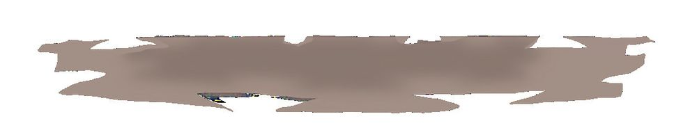

5 രൂപയുടെ
അതല്ലേ പറഞ്ഞത് 10ന്റെ പകുതി യാണ് 5 എന്ന്.
ഇരട്ടി 10 രൂപ.
രണ്ടുപേർക്കും ഇഷ്ടപ്പെട്ട കളിപ്പാട്ടങ്ങൾ കിട്ടി.
കളിപ്പാട്ടങ്ങളുടെ വില രണ്ടുപേരുംം വാങ്ങിയ കളിപ്പാട്ടങ്ങൾ കണ്ടില്ലേ ? ഫിസിൻ വാങ്ങിയത്.
ഫിസ വാങ്ങിയത്.
ആകെ
ആകെ
രൂപ
ആരാണ് കൂടുതൽ രൂപയ്ക്ക് കളിപ്പാട്ടങ്ങൾ വാങ്ങിയത്? 70 രൂപയ്ക്ക് ഏതൊൊക്കെ കളിപ്പാട്ടങ്ങൾ വാങ്ങാം?
64
ഗണിതം 2
സ്റ്റാൻഡേർഡ്
രൂപ

പണക്കണക്ക് ഒരു മാസം കഴിഞ്ഞപ്പോോൾ ഫിസിനും ഫിസയും സമ്പാദ്യയപ്പെട്ടി തുറന്നു. എത്ര രൂപയുണ്ടെന്ന് എണ്ണി നോോക്കി. ഇരുപത് ഒരു രൂപ നാണയങ്ങൾ കൂട്ടിയാൽ 20 രൂപയായി.
100 ഒരു രൂപ
നാണയങ്ങൾ കൂട്ടിയാൽ എത്ര രൂപയാകും?
200 രൂപയാകാൻ എത്ര ഒരു രൂപ വേണം? 50 രൂപയാകാൻ എത്ര 10 രൂപ വേണം? 100 രൂപയാകാൻ എത്ര 10 രൂപ വേണം?
4
യൂണിറ്റ്
200 രൂപയാകാനോോ? സമ്മാനപ്പൊൊതി
65
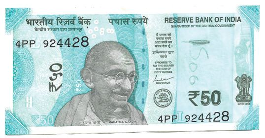
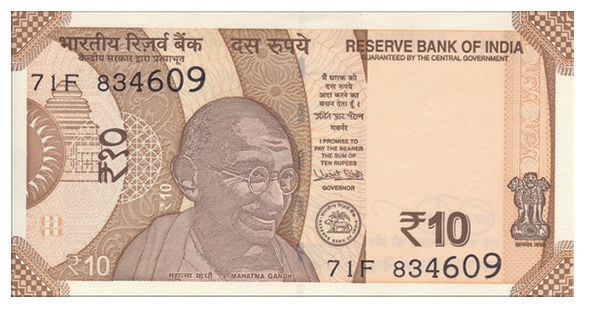
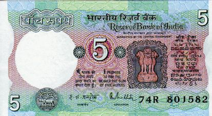
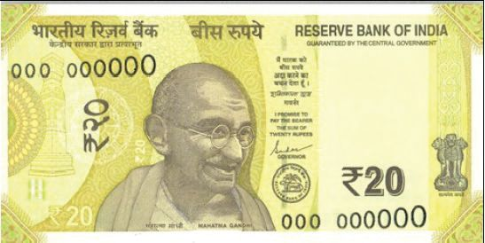

ചില്ലറയാക്കാം. നോോട്ട് എണ്ണം 5 രൂപ 10 രൂപ ഷോോബിൻ 100 രൂപ ചില്ലറയാക്കിയപ്പോോൾ 20 രൂപ ഈ നോോട്ടുകൾ എല്ലാം കിട്ടിയിരുന്നു. 50 രൂപ ഓരോോ നോോട്ടുംം എത്ര എണ്ണം വീതമാകാം?
സമ്പാദ്യംം ഫിസ 1 രൂപ നാണയം 10. 5 രൂപ നാണയം 3. 10 രൂപ നോോട്ട് 2. 50 രൂപ നോോട്ട് 1.
ആകെ
ഫിസിൻ 5 രൂപ നോോട്ട് 1. 5 രൂപ നാണയം 4. 10 രൂപ നോോട്ടുകൾ 5.
ആകെ
ആരുടെ സമ്പാദ്യയപ്പെട്ടിയിലാണ് കൂടുതൽ തുക? എത്ര രൂപ കൂടുതൽ? 66
ഗണിതം 2
സ്റ്റാൻഡേർഡ്
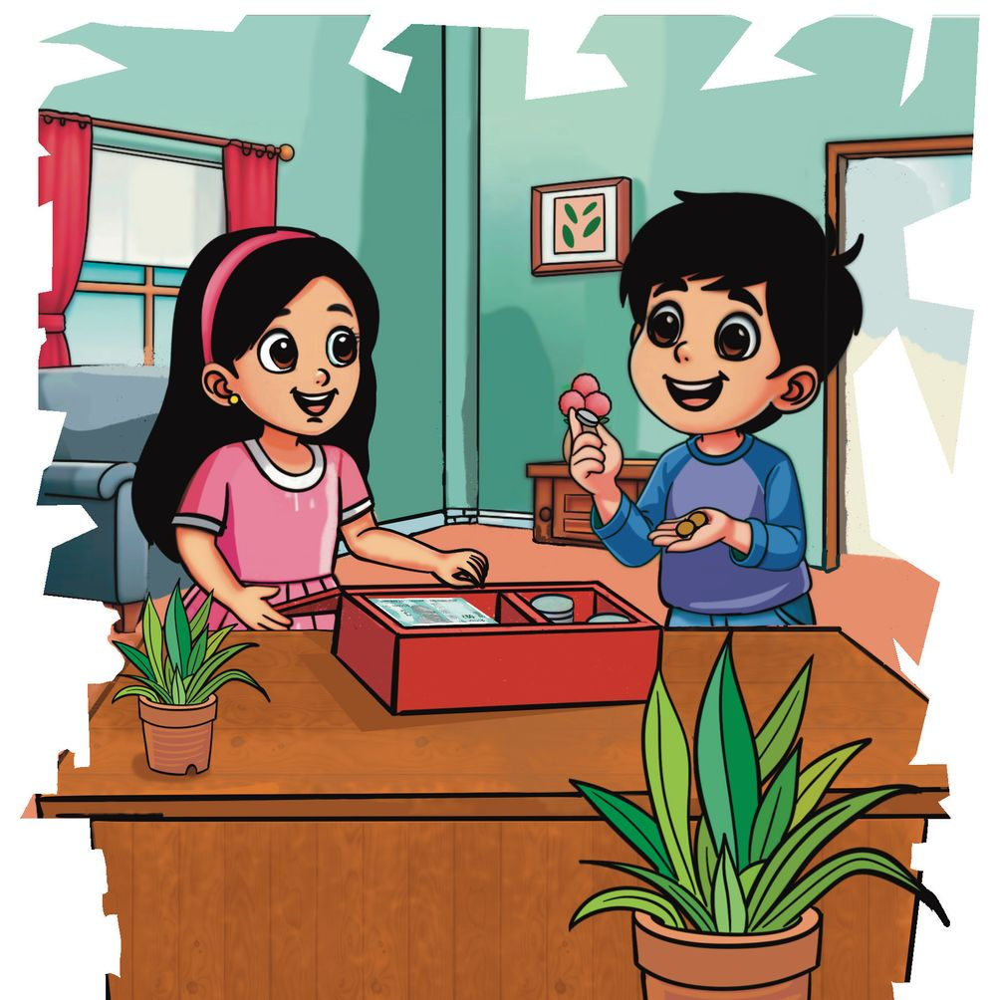

പത്രവാർത്ത
ു ന്നു ു ടു തേ ം യം ാ ഹാ ചികിത്സാ സസംബന്ധമായ
ൾ ചെറുവന്നൂർ: കര ർന്ന് ആശുപത്രിയിൽ അസുഖത്തെ തുടി ചികിത്സാസഹായം തേടുന്നു. കഴിയുന്ന യുവതി
സമ്പാദ്യയ പ്പെട്ടിയിലെ തുക ഇവർക്ക് കൊൊടുത്താലോോ?
തീർച്ചയായും.
ഫിസിനും ഫിസയും അവരുടെ കൈയിലുള്ള 10 രൂപ നോോട്ടുകളുംം 5 രൂപ നോോട്ടുകളുംം ചികിത്സാസഹായത്തിന് കൊൊടുത്തു.
4
യൂണിറ്റ്
എത്ര രൂപയാണ് കൊൊടുത്തത്? സമ്മാനപ്പൊൊതി
67